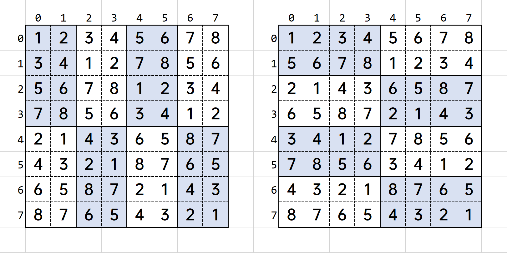
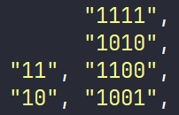
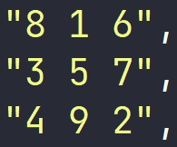
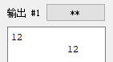
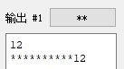

核心在于使用 pre 数组滚动维护每一个数字出现的最后位置，配以树状数组统计数量。由于滚动维护具有后效性，所以需要离线操作，从前往后更新。时间复杂度 $\mathcal O(N\log N)$ ，常数瓶颈在于 map，用手造哈希或者离散化可以优化到理想区间；同时也有莫队做法，复杂度稍劣。例题链接 。
signed main() {
int n;
cin >> n;
vector<int> in(n + 1);
for (int i = 1; i <= n; i++) {
cin >> in[i];
}
int q;
cin >> q;
vector<array<int, 3>> query;
for (int i = 0; i < q; i++) {
int l, r;
cin >> l >> r;
query.push_back({r, l, i});
}
sort(query.begin(), query.end());
vector<pair<int, int>> ans;
map<int, int> pre;
int st = 1;
BIT bit(n);
for (auto [r, l, id] : query) {
for (int i = st; i <= r; i++, st++) {
if (pre.count(in[i])) { // 消除此前操作的影响
bit.add(pre[in[i]], -1);
}
bit.add(i, 1);
pre[in[i]] = i; // 更新操作
}
ans.push_back({id, bit.ask(r) - bit.ask(l - 1)});
}
sort(ans.begin(), ans.end());
for (auto [id, w] : ans) {
cout << w << endl;
}
}
从 $N$ 个整数中任选 $K$ 个整数相加。使用 $\tt{}DFS$ 求解。
int n, k; cin >> n >> k;
vector<int> in(n), now(n);
for (auto &it : in) { cin >> it; }
auto dfs = [&](auto self, int k, int bit, int idx) -> void {
for (int i = idx; i < n; i++) {
now[bit] = in[i];
if (bit < k - 1) { self(self, k, bit + 1, i + 1); }
if (bit == k - 1) {
int add = 0;
for (int j = 0; j < k; j++) {
add += now[j];
}
cout << add << endl;
}
}
};
dfs(dfs, k, 0, 0);
int n, k; cin >> n >> k;
vector<int> in(n);
for (auto &it : in) { cin >> it; }
int comb = (1 << k) - 1, U = 1 << n;
while (comb < U) {
int add = 0;
for (int i = 0; i < n; i++) {
if (1 << i & comb) {
add += in[i];
}
}
cout << add << "\n";
int x = comb & -comb;
int y = comb + x;
int z = comb & ~y;
comb = (z / x >> 1) | y;
}
从 $(0, 0)$ 走到 $(a, b)$，规定每次只能从 $(x, y)$ 走到左下或者右下，方案数记为 $f(a,b)$ 。
从 $(0, 0)$ 走到 $(a, 0)$，规定每次只能走到左下或者右下，且必须有恰好一次传送（向下 $b$ 单位），且不能走到 $x$ 轴下方，方案数为 $\dbinom{a+1}{\frac{a-b}{2}+k+1}$ 。
读入牌型，并且支持两副牌之间的大小比较。代码参考
struct card {
int suit, rank;
friend bool operator < (const card &a, const card &b) {
return a.rank < b.rank;
}
friend bool operator == (const card &a, const card &b) {
return a.rank == b.rank;
}
friend bool operator != (const card &a, const card &b) {
return a.rank != b.rank;
}
friend auto &operator>> (istream &it, card &C) {
string S, T; it >> S;
T = "__23456789TJQKA"; //点数
FOR (i, 0, T.sz - 1) {
if (T[i] == S[0]) C.rank = i;
}
T = "_SHCD"; //花色
FOR (i, 0, T.sz - 1) {
if (T[i] == S[1]) C.suit = i;
}
return it;
}
};
struct game {
int level;
vector<card> peo;
int a, b, c, d, e;
int u, v, w, x, y;
bool Rk10() { //Rk10: Royal Flush，五张牌同花色，且点数为AKQJT（14,13,12,11,10）
sort(ALL(peo));
reverse(ALL(peo));
a = peo[0].rank, b = peo[1].rank, c = peo[2].rank, d = peo[3].rank, e = peo[4].rank;
u = peo[0].suit, v = peo[1].suit, w = peo[2].suit, x = peo[3].suit, y = peo[4].suit;
if (u != v || v != w || w != x || x != y) return 0;
if (a == 14 && b == 13 && c == 12 && d == 11 && e == 10) return 1;
return 0;
}
bool Dif(vector<card> &peo) { //专门用于检查A2345这种顺子的情况（这是最小的顺子）
a = peo[0].rank, b = peo[1].rank, c = peo[2].rank, d = peo[3].rank, e = peo[4].rank;
u = peo[0].suit, v = peo[1].suit, w = peo[2].suit, x = peo[3].suit, y = peo[4].suit;
if (a != 14 || b != 5 || c != 4 || d != 3 || e != 2) return 0;
vector<card> peo2 = {peo[1], peo[2], peo[3], peo[4], peo[0]}; //重新排序
peo = peo2;
return 1;
}
bool Rk9() { //Rk9: Straight Flush，五张牌同花色，且顺连【r1 > r2 > r3 > r4 > r5】
sort(ALL(peo));
reverse(ALL(peo));
a = peo[0].rank, b = peo[1].rank, c = peo[2].rank, d = peo[3].rank, e = peo[4].rank;
u = peo[0].suit, v = peo[1].suit, w = peo[2].suit, x = peo[3].suit, y = peo[4].suit;
if (u != v || v != w || w != x || x != y) return 0;
if (Dif(peo)) return 1; //特判：A2345
if (a == b + 1 && b == c + 1 && c == d + 1 && d == e + 1) return 1;
return 0;
}
bool Rk8() { //Rk8: Four of a Kind，四张牌点数一样【r1 = r2 = r3 = r4】
sort(ALL(peo));
a = peo[0].rank, b = peo[1].rank, c = peo[2].rank, d = peo[3].rank, e = peo[4].rank;
u = peo[0].suit, v = peo[1].suit, w = peo[2].suit, x = peo[3].suit, y = peo[4].suit;
if (a == b && b == c && c == d) return 1;
if (b == c && c == d && d == e) {
reverse(ALL(peo));
return 1;
}
return 0;
}
bool Rk7() { //Rk7: Fullhouse，三张牌点数一样，另外两张点数也一样【r1 = r2 = r3，r4 = r5】
sort(ALL(peo));
a = peo[0].rank, b = peo[1].rank, c = peo[2].rank, d = peo[3].rank, e = peo[4].rank;
u = peo[0].suit, v = peo[1].suit, w = peo[2].suit, x = peo[3].suit, y = peo[4].suit;
if (a == b && b == c && d == e) return 1;
if (a == b && c == d && d == e) {
reverse(ALL(peo));
return 1;
}
return 0;
}
bool Rk6() { //Rk6: Flush，五张牌同花色【r1 > r2 > r3 > r4 > r5】
sort(ALL(peo));
reverse(ALL(peo));
a = peo[0].rank, b = peo[1].rank, c = peo[2].rank, d = peo[3].rank, e = peo[4].rank;
u = peo[0].suit, v = peo[1].suit, w = peo[2].suit, x = peo[3].suit, y = peo[4].suit;
if (u != v || v != w || w != x || x != y) return 0;
return 1;
}
bool Rk5() { //Rk5: Straight，五张牌顺连【r1 > r2 > r3 > r4 > r5】
sort(ALL(peo));
reverse(ALL(peo));
a = peo[0].rank, b = peo[1].rank, c = peo[2].rank, d = peo[3].rank, e = peo[4].rank;
u = peo[0].suit, v = peo[1].suit, w = peo[2].suit, x = peo[3].suit, y = peo[4].suit;
if (Dif(peo)) return 1; //特判：A2345
if (a == b + 1 && b == c + 1 && c == d + 1 && d == e + 1) return 1;
return 0;
}
bool Rk4() { //Rk4: Three of a kind，三张牌点数一样【r1 = r2 = r3，r4 > r5】
sort(ALL(peo));
reverse(ALL(peo));
a = peo[0].rank, b = peo[1].rank, c = peo[2].rank, d = peo[3].rank, e = peo[4].rank;
u = peo[0].suit, v = peo[1].suit, w = peo[2].suit, x = peo[3].suit, y = peo[4].suit;
if (a == b && b == c) return 1;
if (b == c && c == d) {
swap(peo[3], peo[0]);
return 1;
}
if (c == d && d == e) {
swap(peo[3], peo[0]);
swap(peo[4], peo[1]);
return 1;
}
return 0;
}
bool Rk3() { //Rk3: Two Pairs，两张牌点数一样，另外有两张点数也一样（两个对子）【r1 = r2 > r3 = r4】
sort(ALL(peo));
reverse(ALL(peo));
a = peo[0].rank, b = peo[1].rank, c = peo[2].rank, d = peo[3].rank, e = peo[4].rank;
u = peo[0].suit, v = peo[1].suit, w = peo[2].suit, x = peo[3].suit, y = peo[4].suit;
if (a == b && c == d) return 1;
if (a == b && d == e) {
swap(peo[2], peo[4]);
return 1;
}
if (b == c && d == e) {
swap(peo[0], peo[2]);
swap(peo[2], peo[4]);
return 1;
}
return 0;
}
bool Rk2() { //Rk2: One Pairs，两张牌点数一样（一个对子）【r1 = r2，r3 > r4 > r5】
sort(ALL(peo));
reverse(ALL(peo));
a = peo[0].rank, b = peo[1].rank, c = peo[2].rank, d = peo[3].rank, e = peo[4].rank;
u = peo[0].suit, v = peo[1].suit, w = peo[2].suit, x = peo[3].suit, y = peo[4].suit;
vector<card> peo2;
if (a == b) return 1;
if (b == c) {
peo2 = {peo[1], peo[2], peo[0], peo[3], peo[4]};
peo = peo2;
return 1;
}
if (c == d) {
peo2 = {peo[2], peo[3], peo[0], peo[1], peo[4]};
peo = peo2;
return 1;
}
if (d == e) {
peo2 = {peo[3], peo[4], peo[0], peo[1], peo[2]};
peo = peo2;
return 1;
}
return 0;
}
bool Rk1() { //Rk1: high card
sort(ALL(peo));
reverse(ALL(peo));
return 1;
}
game (vector<card> New_peo) {
peo = New_peo;
if (Rk10()) { level = 10; return; }
if (Rk9()) { level = 9; return; }
if (Rk8()) { level = 8; return; }
if (Rk7()) { level = 7; return; }
if (Rk6()) { level = 6; return; }
if (Rk5()) { level = 5; return; }
if (Rk4()) { level = 4; return; }
if (Rk3()) { level = 3; return; }
if (Rk2()) { level = 2; return; }
if (Rk1()) { level = 1; return; }
}
friend bool operator < (const game &a, const game &b) {
if (a.level != b.level) return a.level < b.level;
FOR (i, 0, 4) if (a.peo[i] != b.peo[i]) return a.peo[i] < b.peo[i];
return 0;
}
friend bool operator == (const game &a, const game &b) {
if (a.level != b.level) return 0;
FOR (i, 0, 4) if (a.peo[i] != b.peo[i]) return 0;
return 1;
}
};
void debug(vector<card> peo) {
for (auto it : peo) cout << it.rank << " " << it.suit << " ";
cout << "\n\n";
}
int clac(vector<card> Ali, vector<card> Bob) {
game atype(Ali), btype(Bob);
if (atype < btype) return -1;
else if (atype == btype) return 0;
return 1;
}
规则：每个宫大小为 $2^N2^M$ ，大图一共由 $MN$ 个宫组成（总大小即 $2^N2^M2^N2^M$ ），要求每行、每列、每宫都要出现 $1$ 到 $2^N2^M$ 的全部数字。输出字典序最小方案。
下例为 $2,1$ 和 $1,2$ 时数独字典序最小的示意。

公式：$(i,j)$ 格所填的内容为 $\big(i \bmod 2^N \oplus \left\lfloor \frac{j}{2^M} \right\rfloor \big) \cdot 2^M + \big(\left\lfloor \frac{i}{2^N} \right\rfloor \oplus j \bmod 2^M \big) + 1$ ，注意 $i,j$ 从 $0$ 开始。
$2 - 62$ 进制相互转换。输入格式："转换前进制 转换后进制 要转换的数据"。注释：进制排序为 0-9，A-Z，a-z。
struct numpy {
vector<int> mp; // 将字符转化为数字
vector<char> mp2; // 将数字转化为字符
numpy() : mp(123), mp2(62) { // 0-9A-Za-z
for (int i = 0; i < 10; i++) mp[i + 48] = i, mp2[i] = i + 48;
for (int i = 10; i < 36; i++) mp[i + 55] = i, mp2[i] = i + 55;
for (int i = 36; i < 62; i++) mp[i + 61] = i, mp2[i] = i + 61;
}
// 转换前进制 转换后进制 要转换的数据
string solve(int a, int b, const string &s) {
vector<int> nums, ans;
for (auto c : s) {
nums.push_back(mp[c]);
}
reverse(nums.begin(), nums.end());
while (nums.size()) { // 短除法，将整个大数一直除 b ，取余数
int remainder = 0;
for (int i = nums.size() - 1; ~i; i--) {
nums[i] += remainder * a;
remainder = nums[i] % b;
nums[i] /= b;
}
ans.push_back(remainder); // 得到余数
while (nums.size() && nums.back() == 0) {
nums.pop_back(); // 去掉前导 0
}
}
reverse(ans.begin(), ans.end());
string sh;
for (int i : ans) sh += mp2[i];
return sh;
}
};
有 $N$ 个物品，第 $i$ 个物品为 $a[i]$ ，有无限个容量为 $C$ 的空箱子。两种装箱方式，输出需要多少个箱子才能装完所有物品。
选择最前面的能放下物品的箱子放入物品。
const int N = 1e6 + 10;
int T, n, a[N], c, tr[N << 2];
void pushup(int u){
tr[u] = max(tr[u << 1], tr[u << 1 | 1]);
}
void build(int u, int l, int r){
if (l == r) tr[u] = c;
else {
int mid = l + r >> 1;
build(u << 1, l, mid);
build(u << 1 | 1, mid + 1, r);
pushup(u);
}
}
void update(int u, int l, int r, int p, int k){
if (l > p || r < p) return;
if (l == r) tr[u] -= k;
else {
int mid = l + r >> 1;
update(u << 1, l, mid, p, k);
update(u << 1 | 1, mid + 1, r, p, k);
pushup(u);
}
}
int query(int u, int l, int r, int k){
if (l == r){
if (tr[u] >= k) return l;
return n + 1;
}
int mid = l + r >> 1;
if (tr[u << 1] >= k) return query(u << 1, l, mid, k);
else return query(u << 1 | 1, mid + 1, r, k);
}
int main() {
cin >> n >> c;
for (int i = 1; i <= n; i++) cin >> a[i];
build(1, 1, n);
for (int i = 1; i <= n; i++)
update(1, 1, n, query(1, 1, n, a[i]), a[i]);
cout << query(1, 1, n, c) - 1 << " ";
}
选择能放下物品且剩余容量最小的箱子放物品
void solve(){
cin >> n >> c;
for (int i = 1; i <= n; i++) cin >> a[i];
multiset <int> s;
for (int i = 1; i <= n; i++){
auto it = s.lower_bound(a[i]);
if (it == s.end()) s.insert(c - a[i]);
else {
int x = *it;
// multiset 可以存放重复数据，如果是删除某个值的话，会去掉多个箱子
// 导致答案错误，所以直接删除对应位置的元素
s.erase(it);
s.insert(x - a[i]);
}
}
cout << s.size() << "\n";
}
比较下列浮点数的大小： ${x^y}^z, {x^z}^y, {(x^y)}^z, {(x^z)}^y, {y^x}^z, {y^z}^x, {(y^x)}^z, {(y^z)}^x, {z^x}^y, {z^y}^x, {(z^x)}^y$ 和 ${(z^y)}^x$ 。
vector<pair<ld, int>> val = {
{log(x) * pow(y, z), 0}, {log(x) * pow(z, y), 1}, {log(x) * y * z, 2},
{log(x) * z * y, 3}, {log(y) * pow(x, z), 4}, {log(y) * pow(z, x), 5},
{log(y) * x * z, 6}, {log(y) * z * x, 7}, {log(z) * pow(x, y), 8},
{log(z) * pow(y, x), 9}, {log(z) * x * y, 10}, {log(z) * y * x, 11}};
sort(val.begin(), val.end(), [&](auto x, auto y) {
if (equal(x.first, y.first)) return x.second < y.second; // queal比较两个浮点数是否相等
return x.first > y.first;
});
cout << ans[val.front().second] << endl;
构造题用，其有一些性质：将 $0$ 看作 $-1$；$1$ 看作 $+1$，整个矩阵可以构成一个 $2^k$ 维向量组，任意两个行、列向量的点积均为 $0$ See。例如，在 $k=2$ 时行向量 $\vec{2}$ 和行向量 $\vec{3}$ 的点积为 $1\cdot1+(-1)\cdot1+1\cdot(-1)+(-1)\cdot(-1)=0$ 。
构造方式：$\begin{bmatrix} T & T\ T & !T \end{bmatrix}$

int n;
cin >> n;
int N = pow(2, n);
vector ans(N, vector<int>(N));
ans[0][0] = 1;
for (int t = 0; t < n; t++) {
int m = pow(2, t);
for (int i = 0; i < m; i++) {
for (int j = m; j < 2 * m; j++) {
ans[i][j] = ans[i][j - m];
}
}
for (int i = m; i < 2 * m; i++) {
for (int j = 0; j < m; j++) {
ans[i][j] = ans[i - m][j];
}
}
for (int i = m; i < 2 * m; i++) {
for (int j = m; j < 2 * m; j++) {
ans[i][j] = 1 - ans[i - m][j - m];
}
}
}
构造题用，其有一些性质（保证 $N$ 为奇数）：$1$ 到 $N^2$ 每个数字恰好使用一次，且每行、每列及两条对角线上的数字之和都相同，且为奇数 See 。
构造方式：将 $1$ 写在第一行的中间，随后不断向右上角位置填下一个数字，直到填满。

int n;
cin >> n;
int x = 1, y = (n + 1) / 2;
vector ans(n + 1, vector<int>(n + 1));
for (int i = 1; i <= n * n; i++) {
ans[x][y] = i;
if (!ans[(x - 2 + n) % n + 1][y % n + 1]){
x = (x - 2 + n) % n + 1;
y = y % n + 1;
} else {
x = x % n + 1;
}
}
注意子序列是不连续的。使用二分搜索，以 $\mathcal O(N\log N)$ 复杂度通过，另也有 $\mathcal O(N^2)$ 的 $\tt dp$ 解法。$\sf dis$ $\rm dis$
vector<int> val; // 堆数
for (int i = 1, x; i <= n; i++) {
cin >> x;
int it = upper_bound(val.begin(), val.end(), x) - val.begin(); // low/upp: 严格/非严格递增
if (it >= val.size()) { // 新增一堆
val.push_back(x);
} else { // 更新对应位置元素
val[it] = x;
}
}
cout << val.size() << endl;
vector<array<int, 3>> in(n + 1);
for (int i = 1; i <= n; i++) {
cin >> in[i][0] >> in[i][1];
in[i][2] = i;
}
sort(in.begin() + 1, in.end(), [&](auto x, auto y) {
if (x[0] != y[0]) return x[0] < y[0];
return x[1] > y[1];
});
vector<int> val{0}, idx{0}, pre(n + 1);
for (int i = 1; i <= n; i++) {
auto [x, y, z] = in[i];
int it = lower_bound(val.begin(), val.end(), y) - val.begin(); // low/upp: 严格/非严格递增
if (it >= val.size()) { // 新增一堆
pre[z] = idx.back();
val.push_back(y);
idx.push_back(z);
} else { // 更新对应位置元素
pre[z] = idx[it - 1];
val[it] = y;
idx[it] = z;
}
}
vector<int> ans;
for (int i = idx.back(); i != 0; i = pre[i]) {
ans.push_back(i);
}
reverse(ans.begin(), ans.end());
cout << ans.size() << "\n";
for (auto it : ans) {
cout << it << " ";
}
设置字段宽度：setw(x) ，该函数可以使得补全 $x$ 位输出，默认用空格补全。
bool Solve() {
cout << 12 << endl;
cout << setw(12) << 12 << endl;
return 0;
}

设置填充字符：setfill(x) ，该函数可以设定补全类型，注意这里的 $x$ 只能为 $\tt char$ 类型。
bool Solve() {
cout << 12 << endl;
cout << setw(12) << setfill('*') << 12 << endl;
return 0;
}

string s;
getline(cin, s);
stringstream ss;
ss << s;
while (ss >> s) {
auto res = stoi(s);
cout << res * 100 << endl;
}
$n$ 个人编号 $0,1,2…,n-1$ ，每次数到 $k$ 出局，求最后剩下的人的编号。
$\mathcal O(N)$ 。
int jos(int n,int k){
int res=0;
repeat(i,1,n+1)res=(res+k)%i;
return res; // res+1，如果编号从1开始
}
$\mathcal O(K\log N)$ ，适用于 $K$ 较小的情况。
int jos(int n,int k){
if(n==1 || k==1)return n-1;
if(k>n)return (jos(n-1,k)+k)%n; // 线性算法
int res=jos(n-n/k,k)-n%k;
if(res<0)res+=n; // mod n
else res+=res/(k-1); // 还原位置
return res; // res+1，如果编号从1开始
}
已知年月日，求星期数。
int week(int y,int m,int d){
if(m<=2)m+=12,y--;
return (d+2*m+3*(m+1)/5+y+y/4-y/100+y/400)%7+1;
}
查询区间 $k$ 的最大最小值。
deque<int> D;
int n,k,x,a[MAX];
int main(){
IOS();
cin>>n>>k;
for(int i=1;i<=n;i++) cin>>a[i];
for(int i=1;i<=n;i++){
while(!D.empty() && a[D.back()]<=a[i]) D.pop_back();
D.emplace_back(i);
if(!D.empty()) if(i-D.front()>=k) D.pop_front();
if(i>=k)cout<<a[D.front()]<<endl;
}
return 0;
}
求解 $n^k \bmod p$，其中 $0\le n,k \le 10^{1000000},\ 1\le p \le 10^9$。容易发现 $n$ 可以直接取模，瓶颈在于 $k$ See。
该算法复杂度 $\mathcal O({\tt len}(k))$ 。
int mypow10(int n, vector<int> k, int p) {
int r = 1;
for (int i = k.size() - 1; i >= 0; i--) {
for (int j = 1; j <= k[i]; j++) {
r = r * n % p;
}
int v = 1;
for (int j = 0; j <= 9; j++) {
v = v * n % p;
}
n = v;
}
return r;
}
signed main() {
string n_, k_;
int p;
cin >> n_ >> k_ >> p;
int n = 0; // 转化并计算 n % p
for (auto it : n_) {
n = n * 10 + it - '0';
n %= p;
}
vector<int> k; // 转化 k
for (auto it : k_) {
k.push_back(it - '0');
}
cout << mypow10(n, k, p) << endl; // 暴力快速幂
}
$$n^k \equiv \begin{cases} n^{k \bmod \varphi (p)} & \gcd(n,p)=1 \ n^{k \bmod \varphi(p) + \varphi(p)} & \gcd(n,p)\neq 1 \wedge k\ge\varphi(p)\ n^k & \gcd(n,p)\neq 1 \wedge k<\varphi(p) \end{cases}$$
最终我们可以将幂降到 $\varphi(p)$ 的级别，使得能够直接使用快速幂解题，复杂度瓶颈在求解欧拉函数 $\mathcal O(\sqrt p)$ 。
int phi(int n) { //求解 phi(n)
int ans = n;
for (int i = 2; i <= n / i; i++) {
if (n % i == 0) {
ans = ans / i * (i - 1);
while (n % i == 0) {
n /= i;
}
}
}
if (n > 1) { //特判 n 为质数的情况
ans = ans / n * (n - 1);
}
return ans;
}
signed main() {
string n_, k_;
int p;
cin >> n_ >> k_ >> p;
int n = 0; // 转化并计算 n % p
for (auto it : n_) {
n = n * 10 + it - '0';
n %= p;
}
int mul = phi(p), type = 0, k = 0; // 转化 k
for (auto it : k_) {
k = k * 10 + it - '0';
type |= (k >= mul);
k %= mul;
}
if (type) {
k += mul;
}
cout << mypow(n, k, p) << endl;
}
int128 只在基于 $\tt Lumix$ 系统的环境下可用，需要 $\tt C++20$ 。38位精度，除输入输出外与普通数据类型无差别。该封装支持负数读入，需要注意 write 函数结尾不输出多余空格与换行。
namespace my128 { // 读入优化封装，支持__int128
using i64 = __int128_t;
i64 abs(const i64 &x) {
return x > 0 ? x : -x;
}
auto &operator>>(istream &it, i64 &j) {
string val;
it >> val;
reverse(val.begin(), val.end());
i64 ans = 0;
bool f = 0;
char c = val.back();
val.pop_back();
for (; c < '0' || c > '9'; c = val.back(), val.pop_back()) {
if (c == '-') {
f = 1;
}
}
for (; c >= '0' && c <= '9'; c = val.back(), val.pop_back()) {
ans = ans * 10 + c - '0';
}
j = f ? -ans : ans;
return it;
}
auto &operator<<(ostream &os, const i64 &j) {
string ans;
function<void(i64)> write = [&](i64 x) {
if (x < 0) ans += '-', x = -x;
if (x > 9) write(x / 10);
ans += x % 10 + '0';
};
write(j);
return os << ans;
}
} // namespace my128
// BAD.cpp, 存放待寻找错误的代码
freopen("A.txt","r",stdin);
freopen("BAD.out","w",stdout);
// 1.cpp, 存放暴力或正确的代码
freopen("A.txt","r",stdin);
freopen("1.out","w",stdout);
// Ask.cpp
freopen("A.txt", "w", stdout);
int main() {
int T = 1E5;
while(T--) {
system("BAD.exe");
system("1.exe");
system("A.exe");
if (system("fc BAD.out 1.out")) {
puts("WA");
return 0;
}
}
}
mt19937 rnd(chrono::steady_clock::now().time_since_epoch().count());
int r(int a, int b) {
return rnd() % (b - a + 1) + a;
}
void graph(int n, int root = -1, int m = -1) {
vector<pair<int, int>> t;
for (int i = 1; i < n; i++) { // 先建立一棵以0为根节点的树
t.emplace_back(i, r(0, i - 1));
}
vector<pair<int, int>> edge;
set<pair<int, int>> uni;
if (root == -1) root = r(0, n - 1); // 确定根节点
for (auto [x, y] : t) { // 偏移建树
x = (x + root) % n + 1;
y = (y + root) % n + 1;
edge.emplace_back(x, y);
uni.emplace(x, y);
}
if (m != -1) { // 如果是图，则在树的基础上继续加边
for (int i = n; i <= m; i++) {
while (true) {
int x = r(1, n), y = r(1, n);
if (x == y) continue; // 拒绝自环
if (uni.count({x, y})) continue; // 拒绝重边
edge.emplace_back(x, y);
uni.emplace(x, y);
}
}
}
random_shuffle(edge.begin(), edge.end()); // 打乱节点
for (auto [x, y] : edge) {
cout << x << " " << y << endl;
}
}
struct myhash {
static uint64_t hash(uint64_t x) {
x += 0x9e3779b97f4a7c15;
x = (x ^ (x >> 30)) * 0xbf58476d1ce4e5b9;
x = (x ^ (x >> 27)) * 0x94d049bb133111eb;
return x ^ (x >> 31);
}
size_t operator()(uint64_t x) const {
static const uint64_t SEED = chrono::steady_clock::now().time_since_epoch().count();
return hash(x + SEED);
}
size_t operator()(pair<uint64_t, uint64_t> x) const {
static const uint64_t SEED = chrono::steady_clock::now().time_since_epoch().count();
return hash(x.first + SEED) ^ (hash(x.second + SEED) >> 1);
}
};
// unordered_map<int, int, myhash>
X, Y = map(int, input().split()) X = eval(input())X = [[0 for j in range(0, 100)] for i in range(0, 200)]print("{:.12f}".format(X)) 指保留 $12$ 位小数print("{:<12f}".format(X)) 指左对齐，保留 $12$ 个宽度reverse 实现倒序 X.sort(reverse=True) python
X.sort(key=lambda x: x[1])
X.sort(key=lambda x: x[0], reverse=True)r = open('X.txt', 'r', encoding='utf-8') w = open('Y.txt', 'w', encoding='utf-8') w.write(XX)import sys
sys.set_int_max_str_digits(200000)
sys.setrecursionlimit(100000)
自定义结构体并且自定义排序
class node:
def __init__(self, A, B, C):
self.A = A
self.B = B
self.C = C
w = []
for i in range(1, 5):
a, b, c = input().split()
w.append(node(a, b, c))
w.sort(key=lambda x: x.C, reverse=True)
for i in w:
print(i.A, i.B, i.C)
dic = dict() list.insert(0, X) 实现头部插入、list.pop() 实现尾部弹出、list.pop(0) 实现头部弹出ord() 函数chr() 函数对于一个未知属性的OJ，应当在正式赛前进行以下全部测试：
for (int i : {1, 2}) {} // GNU C++11 支持范围表达式
auto cc = [&](int x) { x++; }; // GNU C++11 支持 auto 与 lambda 表达式
cc(2);
tuple<string, int, int> V; // GNU C++11 引入
array<int, 3> C; // GNU C++11 引入
auto dfs = [&](auto self, int x) -> void { // GNU C++14 支持 auto 自递归
if (x > 10) return;
self(self, x + 1);
};
dfs(dfs, 1);
vector in(1, vector<int>(1)); // GNU C++17 支持 vector 模板类型缺失
map<int, int> dic;
for (auto [u, v] : dic) {} // GNU C++17 支持 auto 解绑
dic.contains(12); // GNU C++20 支持 contains 函数
constexpr double Pi = numbers::pi; // C++20 支持
using i64 = __int128; // 64 位 GNU C++11 支持
Windows 系统输出 $-1$ ；反之则为一个随机数。
#define int long long
map<int, int> dic;
int x = dic.size() - 1;
cout << x << endl;
| 本地-20(64) | CodeForces-20(64) | AtCoder-20(64) | 牛客-17(64) | 学院OJ | CodeForces-17(32) | 马蹄集 | |
|---|---|---|---|---|---|---|---|
| 4E3量级-硬跑 | 2454 | 2886 | 874 | 4121 | 4807 | 2854 | 4986 |
| 4E3量级-手动加速 | 556 | 686 | 873 | 1716 | 1982 | 2246 | 2119 |
// #pragma GCC optimize("Ofast", "unroll-loops")
#include <bits/stdc++.h>
using namespace std;
signed main() {
int n = 4E3, cnt = 0;
bitset<30> ans;
for (int i = 1; i <= n; i++) {
for (int j = 1; j <= n; j += 2) {
for (int k = 1; k <= n; k += 4) {
ans |= i | j | k;
cnt++;
}
}
}
cout << cnt << "\n";
}
// #pragma GCC optimize("Ofast", "unroll-loops")
#include <bits/stdc++.h>
using namespace std;
mt19937 rnd(chrono::steady_clock::now().time_since_epoch().count());
signed main() {
size_t n = 340000000, seed = 0;
for (int i = 1; i <= n; i++) {
seed ^= rnd();
}
return 0;
}
g++ -O2 -std=c++20 -pipe
-Wall -Wextra -Wconversion /* 这部分是警告相关，可能用不到 */
-fstack-protector
-Wl,--stack=268435456